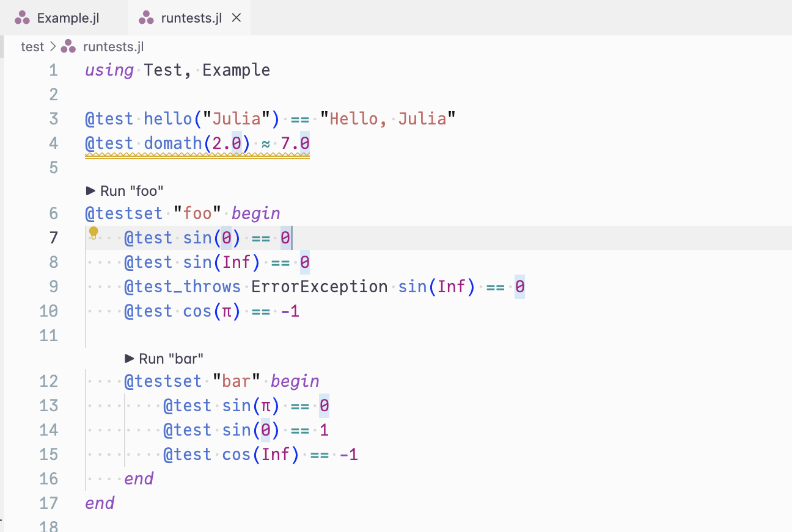
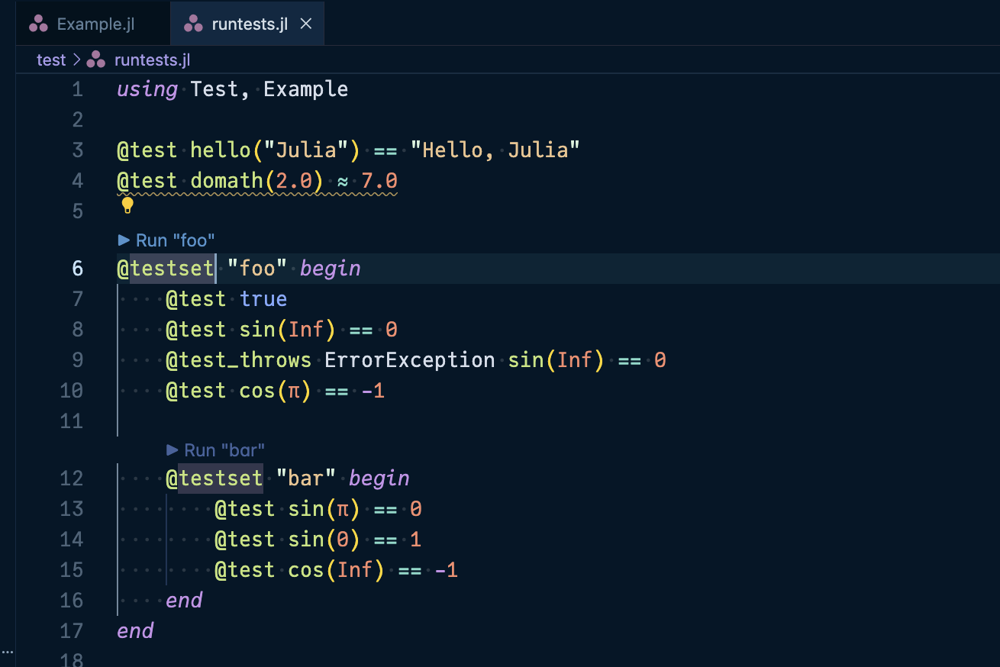
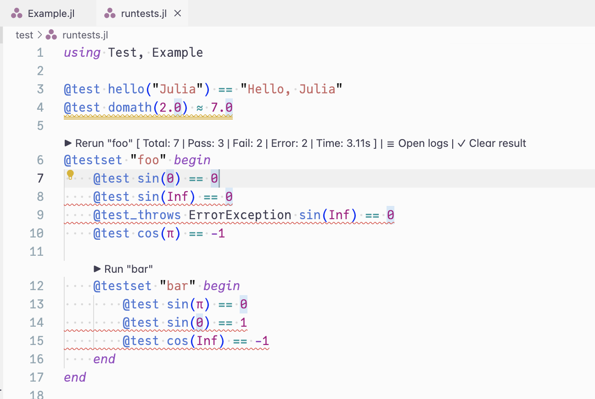
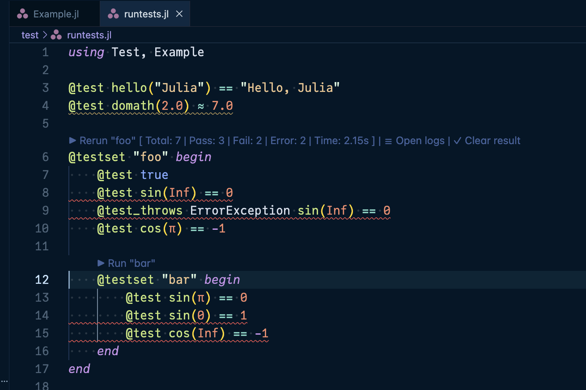
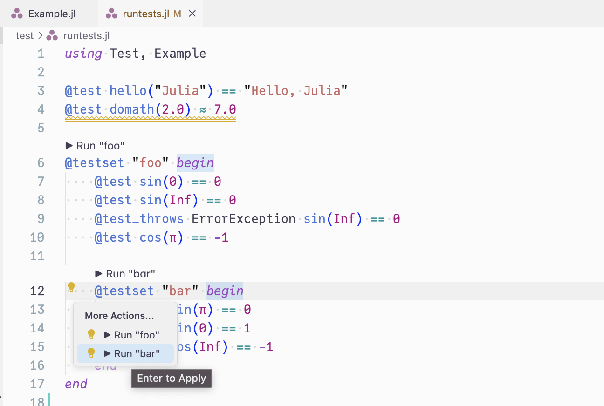
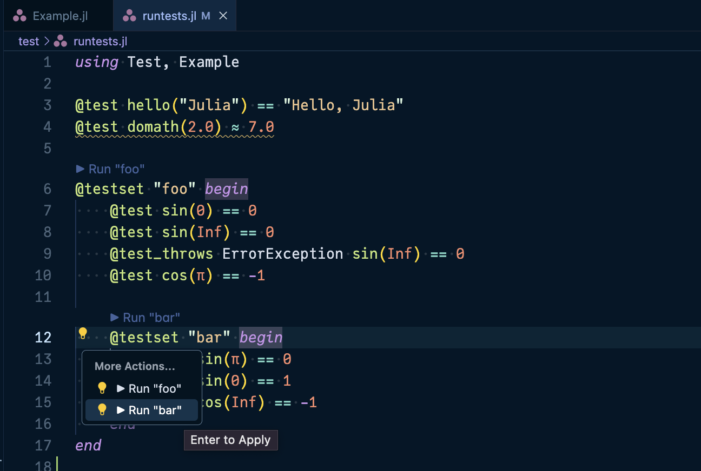
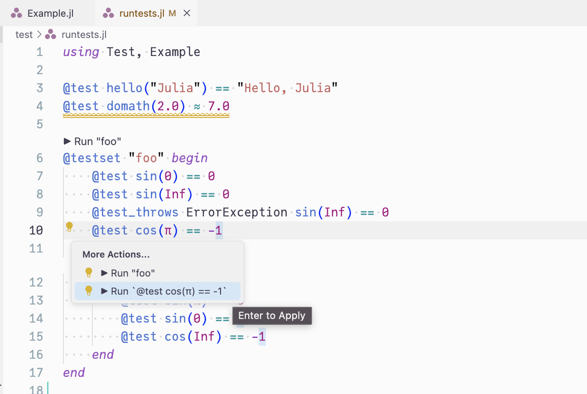
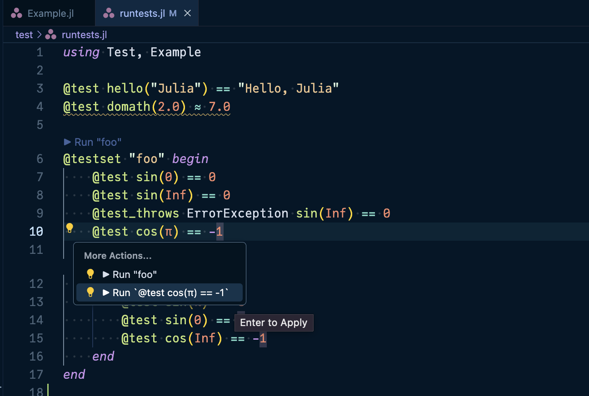
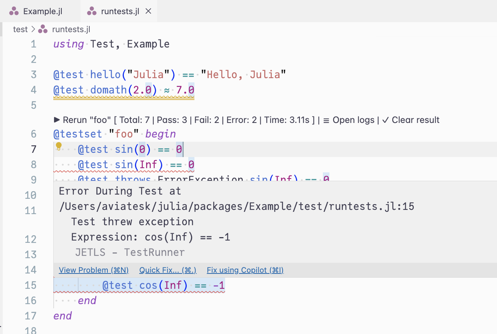
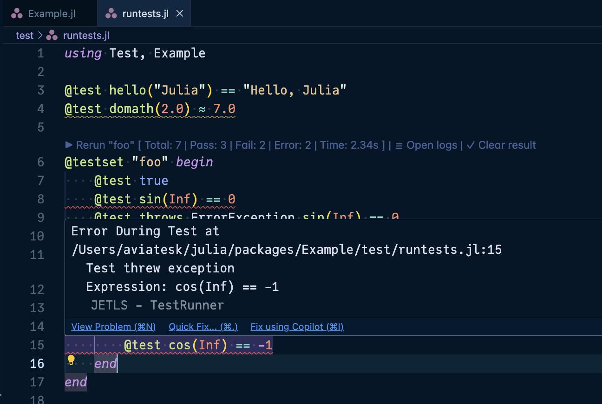

TestRunner integration
JETLS integrates with TestRunner.jl to provide an enhanced testing experience directly within your editor. This feature allows you to run individual @testset blocks directly from your development environment. The same TestRunner.jl also runs tests from the command line with jetls test.
TestRunner.jl is bundled with JETLS, so no additional installation is required. Tests run in a separate process with the Julia running JETLS by default; see [testrunner] to run them with another Julia or to pass additional options to Julia.
Test execution sends the current editor buffer to TestRunner.jl, so saving the file is not required and unsaved edits run as-is, including buffers that have never been saved to disk (untitled: for VSCode / buffer: for Sublime Text), where relative include calls resolve from the workspace root.
Features
Code lens
When you open a Julia file containing @testset blocks, JETLS displays interactive code lenses above each @testset:
▶ Run "testset_name": Run the testset for the first time

After running tests, the code lens is refreshed as follows:
▶ Rerun "testset_name" [summary]: Re-run a testset that has previous results☰ Open logs: View the detailed test output in a new editor tab✓ Clear result: Remove the test results and inline diagnostics

On editors that support workspace/textDocumentContent (an LSP 3.18 feature), the logs open in a read-only virtual document that refreshes in place when you re-run the same testset, so you don't need to reopen it. On other editors, the logs open as a temporary file instead.
Code actions
You can trigger test runs via "code actions" that are explicitly requested by the user:
- Inside a
@testsetblock: Run the entire testset

- On an individual
@testmacro: Run just that specific test case

Note that when running individual @test cases, the error results are displayed as temporary diagnostics for 10 seconds. Click ☰ Open logs button in the pop up message to view detailed error messages that persist.
Test diagnostics
Failed tests are displayed as diagnostics (red squiggly lines) at the exact lines where the failures occurred, making it easy to identify and fix issues:


Progress notifications
For clients that support work done progress, JETLS shows progress notifications while tests are running, keeping you informed about long-running test suites.
Supported patterns
The TestRunner integration supports:
Named
@testsetblocks (via code lens or code actions):using Test # supported: named `@testset` @testset "foo" begin @test sin(0) == 0 @test sin(Inf) == 0 @test_throws ErrorException sin(Inf) == 0 @test cos(π) == -1 # supported: nested named `@testset` @testset "bar" begin @test sin(π) == 0 @test sin(0) == 1 @test cos(Inf) == -1 end end # unsupported: `@testset` inside function definition function test_func1() @testset "inside function" begin @test true end end # supported: this pattern is fine function test_func2() @testset "inside function" begin @test true end end @testset "test_func2" test_func2()Individual
@testmacros (via code actions only):# Run individual tests directly @test 1 + 1 == 2 @test sqrt(4) ≈ 2.0 # Also works inside testsets @testset "math tests" begin @test sin(0) == 0 # Can run just this test @test cos(π) == -1 # Or just this one end # Multi-line `@test` expressions are just fine @test begin x = complex_calculation() validate(x) end # Other Test.jl macros are supported too @test_throws DomainError sin(Inf)
Test selection
When you run a testset or test, TestRunner.jl skips the other tests in the file, including those nested in other code such as let blocks, along with the code using their results. All the other code runs, both at the top level and in the testsets enclosing the selected one, so that the definitions and setup the selected tests rely on are available. For example, running "b" in the following code runs setup() and "b", and skips "a", "c" and report(result):
@testset "outer" begin
setup()
@testset "a" begin
@test f() == 1
end
@testset "b" begin
@test g() == 2
end
result = @testset "c" begin
@test h() == 3
end
report(result)
endFiles included by the code that runs are executed without their tests, except files included by the selected code, which run with all their tests. For example, running "b" in the following code loads helpers.jl without running its tests, runs all of test_b.jl including its tests, and does not run test_a.jl at all:
include("helpers.jl")
@testset "a" include("test_a.jl")
@testset "b" include("test_b.jl")Limitations and workarounds
Tests in functions called by the code that runs always run, since TestRunner.jl does not look into function calls. This includes functions called with
doblocks:function test_parse() @test parse(Int, "1") == 1 end test_parse() # its test always runs mktempdir() do dir @testset "tempdir" begin # always runs @test isdir(dir) end endCall such functions from a testset, so that they run only when the testset is selected (see also Supported patterns):
@testset "parse" test_parse() @testset "tempdir" begin mktempdir() do dir @test isdir(dir) end endSetup code in the testsets enclosing the selected one runs even when the selected tests do not use it:
@testset "outer" begin data = load_large_data() # runs even when running only "small" @testset "large" begin @test process(data) == expected end @testset "small" begin @test process([1, 2]) == [2, 4] end endMove expensive setup into the testset that uses it:
@testset "outer" begin @testset "large" begin data = load_large_data() @test process(data) == expected end @testset "small" begin @test process([1, 2]) == [2, 4] end endMultiple tests on the same line cannot be selected individually:
@testset "math" begin @test f(1) == 1; @test f(2) == 2 # running either runs both endWrite each
@teston its own line:@testset "math" begin @test f(1) == 1 @test f(2) == 2 end
See the How it works and Limitations sections of the TestRunner.jl README for more details.
jetls test CLI
The jetls test command runs tests from the command line with the same TestRunner.jl, without requiring an editor. It runs only the tests that match the given patterns, along with the code they need, as described in Test selection:
# Run all the tests in a file
jetls test test/runtests.jl
# Run the testset named "basic tests"
jetls test test/runtests.jl "basic tests"
# Run the tests on lines 15-25
jetls test test/runtests.jl L15:25
# Run the tests matching an expression pattern
jetls test test/runtests.jl ':(@test length(xs) == 1)'
# Show the results of each test set
jetls test --verbose test/runtests.jl 'r"^basic"'jetls test passes the patterns and the options of TestRunner.jl to it as they are; see the README of TestRunner.jl for them. It exits with code 0 when all the run tests pass, and with code 1 when some tests fail or error, or when the arguments are invalid.
The tests run in a separate process in the same way as from the editor: in the environment of the nearest Project.toml of the test file, with the Julia and the options selected by the [testrunner] configuration. jetls test reads the configuration from the .JETLSConfig.toml in the root path, not from the settings of an editor.
Command reference
jetls test --help
jetls test - Run tests with the TestRunner.jl bundled with JETLS
Usage: jetls test [options] <path> [patterns...]
Runs the tests in <path> that match any of the patterns, or all the tests in
<path> without patterns, in a separate Julia process. The tests run in the
nearest environment of <path>, with the `[testrunner]` configuration of
`.JETLSConfig.toml` applied.
Patterns:
my tests The @testsets named exactly "my tests"
r"regex" The @testsets whose names match the regex
:(expr) The code matching the expression pattern
L10 The code on line 10
L10:20 The code on lines 10-20
Quote patterns so that the shell passes them as they are, e.g. 'r"^basic"'.
Options:
--help, -h Show this help message
--julia=<path> Julia executable to run the tests with
(default: the one selected by `[testrunner] env`,
otherwise the Julia running JETLS)
--project=<path> Project environment of the tests
(default: the nearest Project.toml of <path>)
--root=<path> Set the root path for configuration
(default: the current working directory)
Other options are passed to TestRunner.jl, e.g.:
--verbose, -v Show verbose output
--json Output results in JSON format
--filter-lines=<lines> Run only the matches overlapping the given lines,
e.g. 1,5,10:20 (short form: -f=<lines>)
--read-stdin Read source for <path> from stdin instead of disk
Exit codes:
0 All the tests passed
1 Some tests failed or errored, or invalid arguments
Examples:
jetls test test/runtests.jl
jetls test test/runtests.jl "selected tests"
jetls test test/runtests.jl L15:25
jetls test test/runtests.jl ':(@test length(xs) == 1)'
jetls test --verbose test/runtests.jl 'r"^basic"'
jetls test --julia=/path/to/julia-nightly test/runtests.jl
jetls test --project=test test/runtests.jl "my tests"
Options
--julia=<path>
Runs the tests with the Julia executable at <path>, which can also be a command name found on the PATH. This takes precedence over JULIA_APPS_JULIA_CMD and JULIAUP_CHANNEL in the [testrunner] env configuration. Julia versions that JETLS itself does not support, such as nightly, can be selected as well.
jetls test --julia=/path/to/julia-nightly test/runtests.jl--project=<path>
Runs the tests in the environment at <path> instead of the one detected from the test file. This also takes precedence over --project given by the [testrunner] julia_args configuration.
jetls test --project=test test/runtests.jl "my tests"Note that jetls --project=<path> -- test ... does not select the environment of the tests, since the options before -- apply to the Julia process running JETLS, not to the one running the tests. jetls test warns about it.
--root=<path>
Sets the root path where .JETLSConfig.toml is looked up. Defaults to the current working directory.
jetls test --root=/path/to/SomePkg /path/to/SomePkg/test/runtests.jlTroubleshooting
If tests fail to start with an error about the Julia executable not being found, check the Julia selected by [testrunner] env or by --julia of jetls test: JULIA_APPS_JULIA_CMD needs to point to an existing Julia executable, and JULIAUP_CHANNEL needs the julia launcher of juliaup to be available on the PATH of the JETLS process.
If JULIAUP_CHANNEL seems to have no effect, the julia command on the PATH of the JETLS process is probably not the juliaup launcher, in which case the channel is ignored. Note that this PATH can differ from the one of your shell, e.g. when the editor is not launched from the shell.